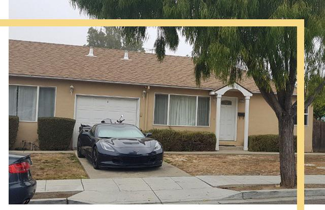

Геморрой в 30, инсульт в 40». За что программисты получают сотни тысяч рублей
Бар с морем бесплатного алкоголя в офисе или новенькие AirPods в подарок от компании? Такие «плюшки» на работе получают программисты. А ещё им довольно много платят. Вакансия разработчика стала первой в рейтинге самых высокооплачиваемых в России. «Секрет фирмы» поговорил с тремя программистами и узнал, в каких условиях они работают, сколько получают и нужно ли бежать на курсы разработчиков.
Про Штаты и квартиры
После года работы в Саратове у меня появилась возможность переехать в Штаты. Вообще, работа в международной компании для программиста — самый простой способ уехать. Они востребованы по всему миру и часто переезжают из одной точки в другую.
Мы между собой называем такие компании галерами или бодишопами (фирмы, продающие разработчиков иностранным заказчикам. — Прим. «Секрета»). Это довольно распространённый вид бизнеса. Кто-то предприимчивый находит заказчиков в Америке и открывает офшоры в странах СНГ. Такая схема безумно выгодна.
Наши программисты ничем не уступают любым другим, но платить им можно в разы меньше. Представьте, заказчик даёт несколько тысяч долларов за разработку ПО, компания-посредник забирает себе большую часть, а остальное раскидывает по программистам. Но даже с этими деньгами в том же Саратове ты чувствуешь себя королём жизни.
Периодически компаниям-заказчикам нужны люди под рукой, непосредственное общение с командой-исполнителем в одном офисе. Обычно большинство из моих коллег отказываются ехать в Штаты. Их держат семьи и привычный образ жизни. Максимум на несколько месяцев в командировку в Кремниевую долину — и обратно домой.
Каждая рабочая поездка в Штаты в среднем длится три месяца. Каждый день тебе платят $110, снимают квартиру и арендуют машину. Также на карточку падает рублёвая зарплата.
Бывает, что мои коллеги в таких командировках едят только макароны или гречку. Зато приезжают в Саратов и сразу берут квартиру, машину или делают первый взнос по ипотеке.
Про балдёж и Tesla
В Саратове я получал около 70 000 — 100 000 рублей в месяц. После переезда в Калифорнию мне стали платить $120 000 в год. Также первые три месяца компания снимала мне жильё, дала несколько тысяч долларов на первое время и предоставила машину.
За каждого члена семьи (жена и дети) контора платит по $1000 дополнительно, плюс оплата билетов и расходов на визу.
В месяц я трачу около $2500. Мы с другом из Питера снимаем дом на двоих и платим по $1700. Ещё $1000 уходит на еду и содержание машины. Не стоит забывать и о налогах. В США они зависят от семейного положения и детей. Холостякам приходится платить максимальный процент — 35. Семьям с детьми — в районе 20.
Можно читать это и думать, что мы, айтишники, совсем зажрались. Да, в нашей сфере принято повышать зарплату каждые полгода. Если кому-то не подняли, то это воспринимается как личное оскорбление. Но в Калифорнии у местных программистов зарплаты в три раза больше, чем у нас: около $300 000 — $400 000 в год. Вот к чему нужно стремиться.
При моей сравнительно небольшой зарплате я стараюсь ни в чём себе не отказывать. Хочу, чтобы у меня всё было балдёжно. Недавно купил себе монитор за 700 баксов. AirPods новые на следующий день взял. Мой коллега из Саратова за год смог купить здесь Tesla, а я — Lexus.
Про удачу и галеру
Все таксисты Кремниевой долины знают, что скоро останутся без работы. Когда я ездил на такси, водители рассказывали, что по вечерам учат код. Один учит Python, другой — Java. Они даже совета просили, какой язык станет самым востребованным.
Также популярны школы для программирования. Какая-нибудь бьюти-блогерша выкладывает пост, что закончила курсы по разработке на Python. То есть человек, от которого ты даже не ожидаешь такого, тоже в теме.
Я понимаю, что мне очень повезло. Точнее, нам очень повезло. Сейчас наши знания нужны, специалистов не хватает, и мы получаем большие деньги за инженерную работу.
В Кремниевой долине большое русское комьюнити. Но работу между собой мы называем галерой, а себя — гребцами. Когда работаешь через международную компанию на разных заказчиков, то не ощущаешь самой ценности своего труда. Сегодня одни, завтра другие. Мы не видим конечного продукта. Гребём и гребём неизвестно куда.
Про тайную комнату и «плюшки»
Самое крутое, что есть в моём офисе, — бесплатная еда. Но это не просто еда. Здесь три ресторана: китайский, американский и итальянский. Ещё есть несколько кафешек. В любой момент ты можешь прийти и покушать. Я, например, набираю еду на выходные и экономлю.
Можно даже привести своих друзей или семью и тоже бесплатно покушать. На одном из этажей есть тайная комната — дверь в стене без ручки. В отдельном месте спрятан сканер, и когда ты прикладываешь бейдж, то дверь открывается, а там бар с морем алкоголя.
акже есть комнаты для дневного сна, спортзал, бассейн, игровая приставка и настольный футбол. Каждому сотруднику начисляются баллы в зависимости от его работы. Их он может потратить на массаж или другие «плюшки».
Илья, Java-разработчик
Про бедность и дешёвую рабочую силу
Программисты в России зарабатывают очень мало: разработчик в среднем получает $20 в час. Например, в Германии ставка в два, два с половиной раза выше. Это несправедливо. Почему я должен получать меньше только из-за низкого уровня жизни в стране?
Мы часто работаем на зарубежных заказчиков. Русские для них — это просто дешёвая и качественная рабочая сила. Плюс к этому наши программисты, в отличие от европейцев, часто перерабатывают или продолжают работу из дома.
Любой может открыть IT-вакансии, где требуется английский, и посмотреть на зарплаты. От 400 000 рублей вполне можно зарабатывать. Почему в России большинству платят 200 000 рублей? Просто это рынок. Многие хорошие программисты готовы работать за эту сумму. Когда какой-то слабый девелопер просит 300 000 рублей, я этому радуюсь. Надо, чтобы все просили по 300 000. IT-компании могут и должны платить большие суммы.
Про офисные стулья за 100 000
Когда я решил переехать из Ульяновска, то открыл своё резюме на HeadHunter. В день я получал около 10–15 звонков и ещё больше писем с предложениями о работе. Я никогда сам не писал в компании. Только выбирал из массы возможных вариантов. В итоге я остановился на одной московской конторе.
Тогда компания безвозмездно дала мне на переезд в столицу около 200 000 рублей. Она оплатила мне и моей девушке билеты из Ульяновска в Москву и сняла жильё на первые дни в новом городе. Все расходы на мой переезд, зарплату и оформление компания восполнила в первые три месяца работы. У нас открытая информация, кто и сколько принёс или сэкономил денег своим трудом.
В моём офисе каждый стул стоит 100 000 рублей. Также любой программист получает в личное пользование ноутбук стоимостью более 200 000 рублей. Сотрудников обеспечивают бесплатными завтраками, обедами и ужинами, доставленными из ближайших кафе и ресторанов.
На кухне всегда можно найти мороженое, йогурты, сэндвичи или что-то другое. По пятницам нам привозят много разной еды и алкоголя. Так мы подводим итоги недели.
Компания полностью компенсирует затраты на спортзал и курсы иностранного языка. Но это далеко не самые лучшие условия. Например, в «Яндексе» или JetBrains есть собственный бариста и тренажёрный зал в офисе. На всё это уже не обращаю внимания. Я понимаю, что моя работа приносит компании миллионные доходы, и не согласен на меньшее.
Единственное, что меня раздражает, — это коллеги. Типичный программист слушает «Мельницу», играет в настолки, делает вид, что разбирается в пиве, и пытается кататься на сноуборде. Это дико надоело. К счастью, с приходом нового поколения эта ситуация меняется. Наконец-то можно обсудить новый альбом «Макулатуры» или показать свой фимоз (тоже у всех программистов в запущенной степени).
Про Дудя и коррупцию
Вы не задумывались, почему именно IT-компании первыми достигли отметки в триллион долларов? Вот теперь можно понять, сколько зарабатывают на программистах.
Я уже давно убедил себя, что я просто наёмник. Кресла и завтраки — это удержание сотрудника. Почти во всех IT-компаниях, чтобы тебя не уволили, достаточно появляться на пару часов в день. На прошлом месте работы я только ночевал (неохота было тратить деньги на квартиру).
Я часто встречал непонимание со стороны знакомых. Они возмущённо спрашивали: «А за что вам столько платят?» Люди, кто сделал все эти чаты и форумы, на которых вы можете общаться? Дома у вас есть цифровое телевидение, компьютеры. Кто всё это создал? Загляните в свой смартфон — 4G-интернет. Вы не представляете, насколько это сложная технология. А когда Дудя на YouTube смотрите, знаете, как этот сервис работает?
Лучше бы спрашивали, почему у директоров государственных предприятий по 10 домов и 20 машин. В IT намного ниже коррупция и взяточничество. Здесь невозможно сидеть на денежном потоке и класть половину прибыли себе в карман.
А офисами программистов не стоит восхищаться — это нормальные условия труда. Вам нужно подойти к своему начальнику и спросить об этом у него. А если он не обставляет ваше рабочее место, то обставляет свою дачу.
Причины, по которым я стащил не всю статью:
- Вряд ли кто-то ее будет прям читать
- Ну и как бы тут я покажу, что разобрался с ul
- Мальца лень
- Тут я один раз покажу, что знаю про ol
- Тут я второй раз покажу, что знаю про ol
- Тут я третий раз покажу, что знаю про ol
- Тут можно глянуть про ту самую глубину
- Чуть углубимся
- Еще чутка глубже
- Глууууубже
- Оооо, да, самое то
- А вот это уже перебор
- Оооо, да, самое то
- Глууууубже
- Еще чутка глубже
- Чуть углубимся
Еще немного про h3
И про h4 конечно же
Пускай этот span просто полежит тут